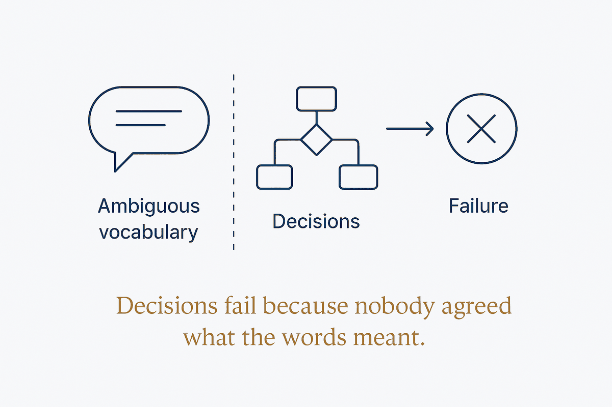

Decisions rarely fail because the logic is wrong. They fail because nobody agreed what the words meant.

Every operational decision refers to business concepts: is this a high-risk customer, a preferred supplier, an active account? The logic that acts on those labels gets scrutinised endlessly. The labels themselves usually do not — and that is where the failure lives. If three competent people look at the same case and disagree about whether it qualifies, no amount of correct logic downstream will produce consistent outcomes.
That disagreement test is the whole diagnostic, and it is cheap enough to run in an afternoon. Take a handful of real cases, ask several people to apply the term, and compare. Consensus means the term is defined in practice even if nobody wrote it down. Divergence means you have discovered the actual problem — and discovered it before writing a rule that would have encoded one person's reading as if it were the organisation's.
The reason this matters more with AI than it did without is scale of application. A human applying a fuzzy term applies it a few dozen times and notices the edge cases. A system applies it continuously, silently, at volume, and propagates one interpretation into every downstream decision, report and model. Ambiguity that used to cause occasional friction becomes systematic error — the machine does not hesitate at the boundary, because it cannot see one.
So the useful first move in most "we need better AI" projects is not technical. It is establishing what the twenty or thirty load-bearing terms actually mean, who owns each definition, and where the boundary sits. That work is unglamorous and it is the work — the problem is not the language, it is the vocabulary, and a vocabulary is something you decide rather than something you have.